¿Quiénes son los 26 jugadores que ganaron el Mundial de Qatar 2022 con la Argentina?
La Argentina se quedó con la Copa del Mundo luego de derrotar a Francia por 4-2 en los penales tras un partido que terminó 3-3 en un encuentro que quedará en la historia del fútbol como una de las grandes finales en la historia de este deporte. Finalmente, Lionel Messi cumplir con el sueño de toda su vida y se quedó con el único título que le faltaba.
Cabe destacar que el entrenador hizo jugar a 24 de los 26 jugadores a lo largo de todo el torneo. Los únicos que no sumaron ni un solo minuto en todo el torneo fueron los dos arqueros suplentes. Esto demuestra la caegoría de plantel que tenía a su disposición el equipo albiceleste.
A continuación vamos a repasar los 26 jugadores que fueron elegidos por Lionel Scaloni y que llevaron a la Argentina a conquistar su tercer Mundial en su historia:
1. Emiliano Martínez
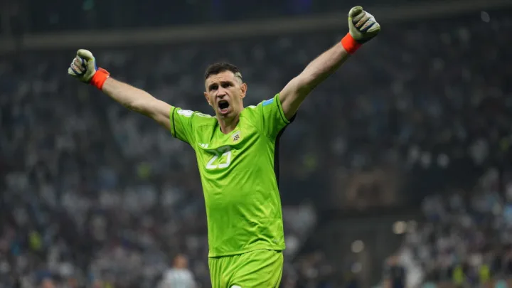2. Franco Armani
3. Gerónimo Rulli
4. Nahuel Molina
5. Gonzalo Montiel
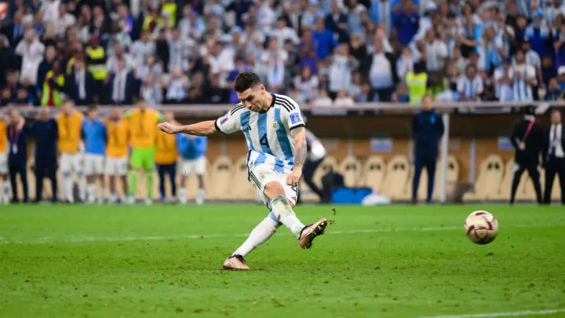6. Cristian Romero
7. Germán Pezzella
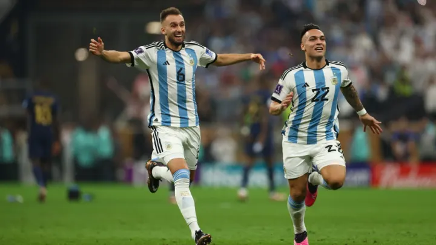8. Nicolás Otamendi
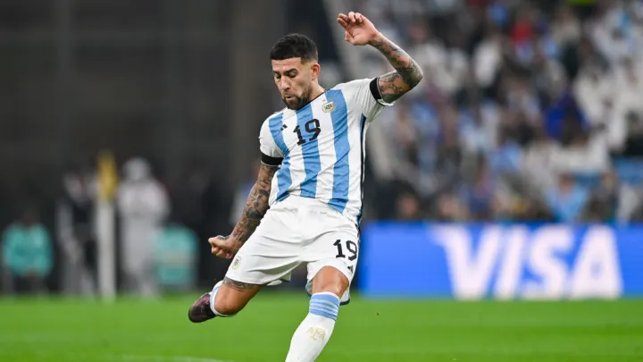9. Lisandro Martínez
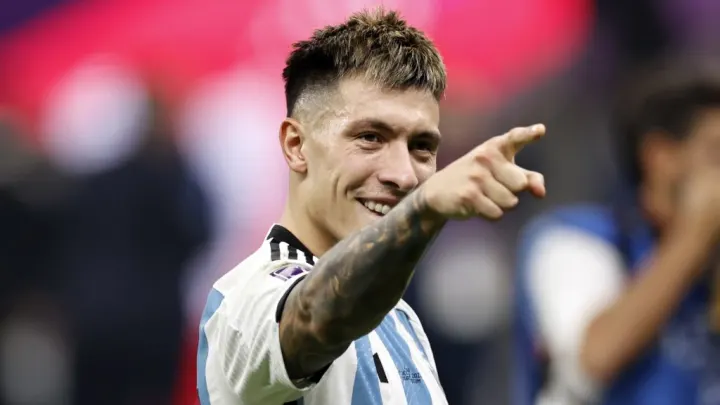10. Marcos Acuña
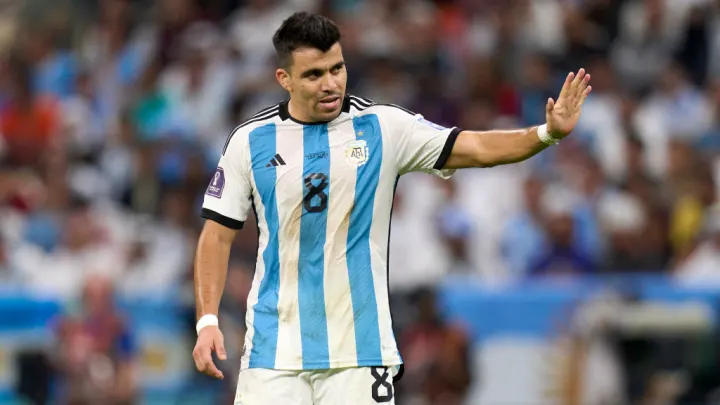11. Nicolás Tagliafico
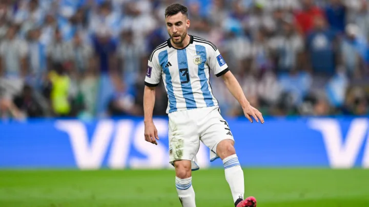12. Juan Foyth
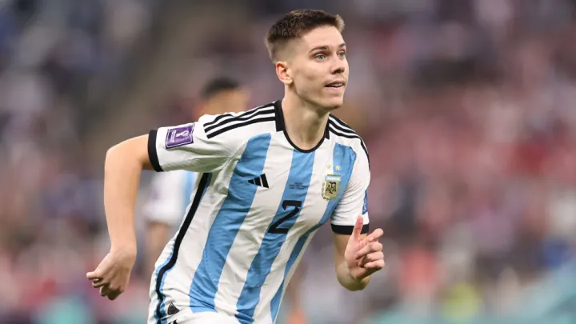13. Rodrigo De Paul
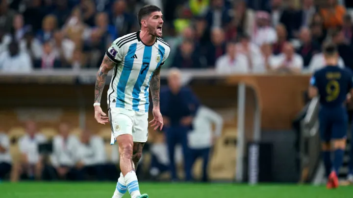14. Leandro Paredes
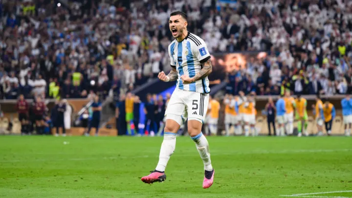15. Alexis Mac Allister
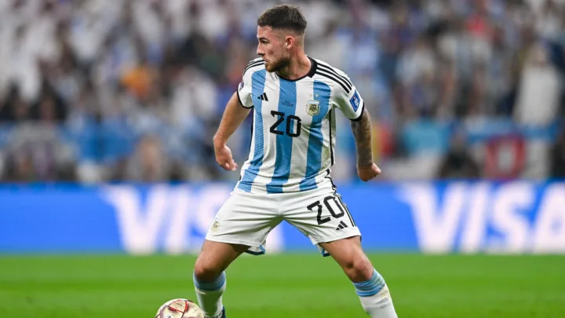16. Guido Rodríguez
17. Alejandro Gómez
18. Enzo Fernández
19. Exequiel Palacios
20. Thiago Almada
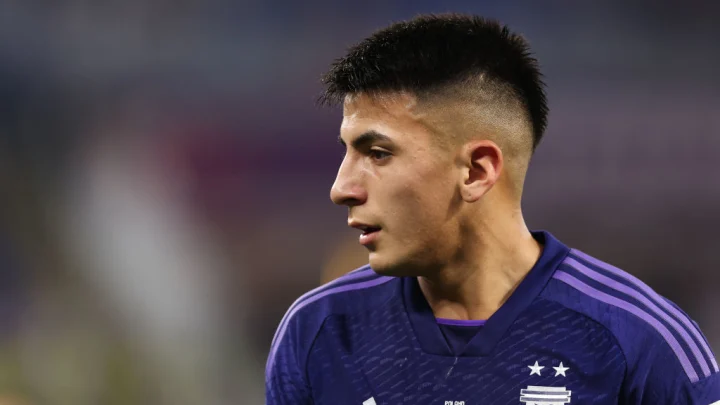21. Lionel Messi
22. Ángel Di María
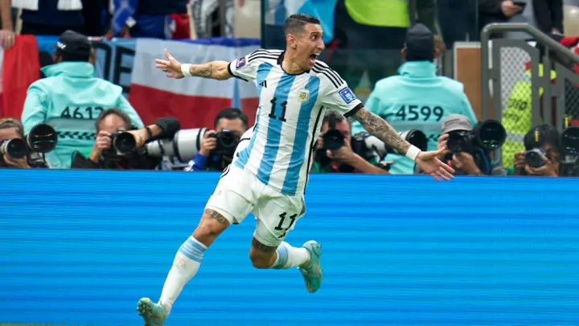23. Lautaro Martínez

24. Julián Álvarez
25. Paulo Dybala
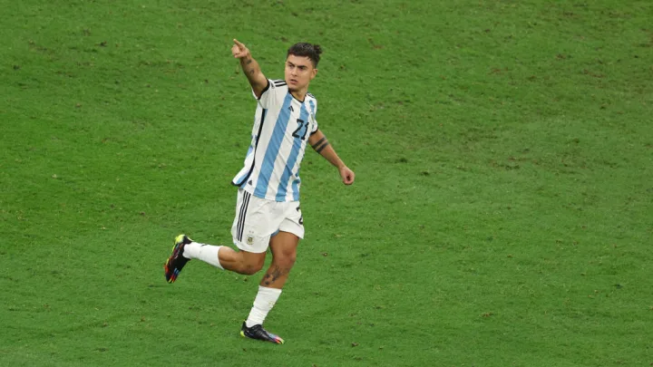26. Ángel Correa
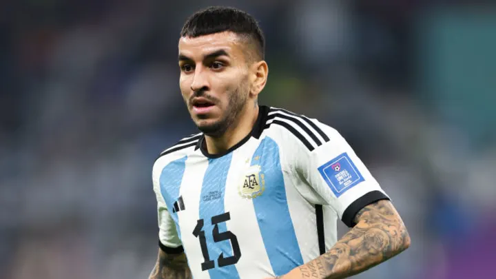Estos 26 jugadores quedarán en la historia para siempre del fútbol argentino y de este deporte. Argentina se quedó con el Mundial de Qatar 2022 demostrando que además de saber jugar al fútbol se necesita ambición, ganas, entrega y mucho pero mucho trabajo en equipo.